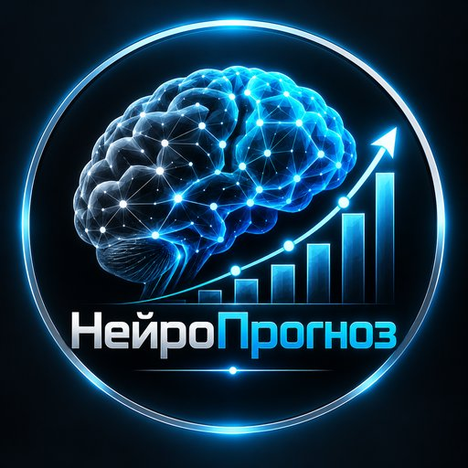

Прогнозы на матчи CS2 от самообучающейся ИИ-модели. Она круглосуточно пересчитывает шансы команд и публикует сигнал только тогда, когда видит перевес над коэффициентом. Все результаты — открыто, без удалений.
Подписаться в Telegram| Ставок | Угадано | Ср. кэф | Итог | |
|---|---|---|---|---|
| Победа | 26 | 50% | 2.16 | +1.7% |
| Фора | 8 | 50% | 2.42 | +3.8% |
| Ставок | Угадано | Ср. кэф | Итог | |
|---|---|---|---|---|
| Октябрь 2026 | 34 | 50% | 2.22 | +5.4% |
| Ставок | Угадано | Ср. кэф | Итог | |
|---|---|---|---|---|
| до 1.80 | 9 | 56% | 1.59 | -3.1% |
| 1.80–2.30 | 9 | 67% | 1.98 | +6.5% |
| 2.30–3.20 | 15 | 40% | 2.66 | +4.0% |
| выше 3.20 | 1 | 0% | 3.52 | -2.0% |
Ещё 8 сигналов ждут результата.
Статистика считается по всем сигналам, опубликованным в канале, по коэффициенту из сигнала. Ставка — в % от банка.
Жирным — фаворит по модели и его шанс на победу; далее — шанс победы всухую и шанс третьей карты. Это аналитика, а не сигналы и не советы ставить: ставки с перевесом выходят в канале отдельными постами.
| МСК | Матч | Шанс фаворита | Всухую / 3 карты |
|---|---|---|---|
| 🏆 ESEA Season 59: Advanced Division - Europe | |||
| 30.10 20:30 | B8 Academy — Banger Gang | 51% | BO1 |
| 30.10 22:00 | Banger Gang — ENRAGE | 63% | BO1 |
| 30.10 22:30 | MTX — Fortress | 65% | BO1 |
| 🏆 CCT Europe 2026 Series 12 | |||
| 30.10 21:00 | Phantom — Lavked | 72% | 2:0 49% · 3 карты 40% |
| 31.10 12:00 | 9INE — Betclic | 50% | 0:2 27% · 3 карты 46% |
| 31.10 18:00 | Butterfly — Acend | 61% | 0:2 39% · 3 карты 41% |
| 31.10 21:00 | BAKS — FOKUS | 78% | 0:2 58% · 3 карты 34% |
| 🏆 CCT Europe 2026 Series 13 Play-In | |||
| 30.10 21:00 | Spirit Academy — Falcons Force | 69% | 2:0 43% · 3 карты 41% |
| 31.10 12:00 | PsychoFace — DONSTU | 56% | 2:0 34% · 3 карты 44% |
| 31.10 15:00 | Saint Sinners — Misa | 56% | 0:2 33% · 3 карты 46% |
| 31.10 18:00 | Sökerorg — Fortress | 86% | 2:0 67% · 3 карты 29% |
| 31.10 21:00 | Azuolas — Illyrians | 76% | 0:2 54% · 3 карты 37% |
| 🏆 CyberClash Season 2 | |||
| 30.10 21:00 | Nuclear TigeRES — PRIVATE | 53% | 2:0 29% · 3 карты 45% |
| 🏆 Fiesta Series 3 | |||
| 30.10 21:00 | Wingman — Azuolas | 64% | 2:0 43% · 3 карты 41% |
| 🏆 CCT Europe 2026 Contenders 10 | |||
| 30.10 22:15 | Spirit Academy Black — TTG Esports | 54% | 2:0 32% · 3 карты 44% |
| 31.10 19:30 | Monte — prodigy | 85% | |
| 🏆 FiReSPORTS Last Chance 2026 | |||
| 30.10 22:30 | BESTIA — BTH | 90% | |
| 30.10 22:30 | Wildcard — Hacha | 91% | 2:0 71% · 3 карты 26% |
| 31.10 16:00 | Bounty Hunters — BARCA | 64% | |
| 31.10 16:00 | Galorys — Procyon | 68% | 2:0 42% · 3 карты 42% |
| 🏆 Gamers Club Masters VII | |||
| 30.10 23:00 | Imperial — paiN | 63% | 2:0 40% · 3 карты 43% |
| 31.10 02:30 | DENDELE — Turma do Pagode | 69% | 2:0 43% · 3 карты 42% |
| 🏆 DFRAG Invitational 2026 | |||
| 31.10 06:00 | Abyssal — NEXVOID | 74% | 0:2 50% · 3 карты 39% |
| 🏆 European Pro League Series 10 Play-In | |||
| 31.10 12:00 | Vexar — eSuba | 56% | 2:0 33% · 3 карты 43% |
| 🏆 United21 Season 57 | |||
| 31.10 12:00 | Gatorian — gothboiclique | 55% | 0:2 32% · 3 карты 45% |
| 🏆 Battle of Baltics 2026 | |||
| 31.10 13:00 | Optibet — Fraternity | 53% | |
| 31.10 16:30 | Galaxy Gaming — Esprots | 51% | |
| Дата | Матч | Кэф | Итог | |
|---|---|---|---|---|
| ✅ | 30.10 | NEXVOID — FlyQuest 0:2 | 1.36 | +0.7% |
| ✅ | 29.10 | eSuba — ROUNDS 0:1 | 2.48 | +1.4% |
| ❌ | 29.10 | Ducks — prodigy 1:2 | 2.50 | -2.0% |
| ✅ | 29.10 | Fraternity — Inner Circle Prospect 1:0 | 2.07 | +1.4% |
| ✅ | 29.10 | B8 Academy — BANGARANGA 1:0 | 1.60 | +1.2% |
| ✅ | 29.10 | Winx — TTG Esports 0:2 | 1.99 | +2.0% |
| ❌ | 29.10 | ROUNDS — Spirit Academy Green 0:1 | 3.52 | -2.0% |
| ✅ | 29.10 | Inner Circle — Astralis 1:2 | 2.00 | +2.0% |
| ✅ | 29.10 | BARCA — Bounty Hunters 1:2 | 2.40 | +2.8% |
| ✅ | 28.10 | Fortress — BOJONG 1:0 | 1.83 | +1.7% |
| ❌ | 28.10 | SPARX — Nemesis Academy 2:0 | 1.85 | -2.0% |
| ❌ | 28.10 | wnT — NoTime 0:1 | 2.01 | -2.0% |
| ✅ | 28.10 | GamersLab — BOJONG 0:1 | 1.87 | +1.7% |
| ❌ | 28.10 | Luminosity — Envy 1:2 | 1.68 | -2.0% |
| ✅ | 28.10 | Nemesis — Eternal Fire 1:2 | 2.60 | +3.2% |
| ✅ | 27.10 | Envy — GamerLegion 1:2 | 2.60 | +3.2% |
| ✅ | 27.10 | Envy — GamerLegion 1:2 | 1.50 | +1.0% |
| ❌ | 27.10 | B8 Academy — The Chosen Few 1:0 | 2.37 | -1.4% |
| ❌ | 27.10 | 99firepower 1utility — Inner Circle Prospect 1:0 | 1.63 | -2.0% |
| ❌ | 27.10 | Nemesis Academy — Spirit Academy Black 1:2 | 2.65 | -1.5% |
| ❌ | 27.10 | Astralis — fnatic 0:2 | 1.62 | -0.6% |
| ❌ | 27.10 | Nuclear TigeRES — FOKUS 1:2 | 2.10 | -0.5% |
| ❌ | 27.10 | Alliance — FaZe 0:2 | 2.70 | -0.5% |
| ✅ | 27.10 | Nemiga — DENDELE 2:0 | 2.90 | +3.3% |
| ❌ | 27.10 | B8 — K27 1:2 | 2.70 | -1.6% |
| ✅ | 27.10 | Rooster — Abyssal 2:1 | 2.12 | +2.2% |
| ❌ | 26.10 | Nuclear TigeRES — UNiTY 2:1 | 2.80 | -1.7% |
| ✅ | 26.10 | Nuclear TigeRES — UNiTY 2:1 | 1.58 | +0.3% |
| ✅ | 26.10 | ECSTATIC — MASONIC 1:0 | 1.57 | +0.3% |
| ❌ | 26.10 | BRUTE — Metizport 2:0 | 2.70 | -1.2% |
Ждут результата: 8 сигналов — смотрите их в канале.
| ✅ | 30.10 | ShindeN — Isurus 2:0 |
| ✅ | 30.10 | Fluxo — Signatus 2:0 |
| ❌ | 30.10 | QUINTESSÊNCIA — NC 0:2 |
| ❌ | 30.10 | MIBR — Eternal Fire 0:2 |
| ❌ | 30.10 | Nemiga — Vitality 2:0 |
| ✅ | 30.10 | FOKUS — Sökerorg 2:0 |
| ❌ | 30.10 | BASEMENT BOYS — Teletubisie 0:1 |
| ❌ | 30.10 | GenOne — BAKS 1:2 |
| ✅ | 30.10 | Alter Ego — Abyssal 2:0 |
| ✅ | 30.10 | NEXVOID — FlyQuest 0:2 |
| ✅ | 30.10 | Turma do Pagode — ALKA 2:0 |
| ❌ | 29.10 | Galorys — Procyon 1:2 |
| ✅ | 29.10 | DENDELE — Low Cortisol BR 2:0 |
| ✅ | 29.10 | The Chosen Few — OLDBOYS PL 0:1 |
| ❌ | 29.10 | eSuba — ROUNDS 0:1 |
| ✅ | 29.10 | Spirit Academy Black — Monte 0:2 |
| ❌ | 29.10 | Ducks — prodigy 1:2 |
| ❌ | 29.10 | Fraternity — Inner Circle Prospect 1:0 |
| ✅ | 29.10 | B8 Academy — BANGARANGA 1:0 |
| ✅ | 29.10 | HOTU — GamerLegion 2:0 |
| ✅ | 29.10 | BetBoom — FURIA 0:2 |
| ❌ | 29.10 | TYLOO — Iberian Soul 1:2 |
| ✅ | 29.10 | 100 Thieves — Bounty Hunters 2:0 |
| ❌ | 29.10 | fnatic — MIBR 2:0 |
Турниры: Major, IEM, BLAST, PGL, ESL Pro League, CCT, NODWIN и другие турниры Counter-Strike 2.